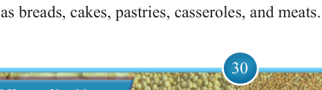

30


Food and Human Nutrition

Form Two
Baking
Baking is a method of cooking in the hot dry air of a heated oven. The food should be baked at the right temperature to cook the inside part without hardening the outer surface. This method is suitable for cooking foods that have more moisture such as cakes, biscuits, puddings and breads. Likewise, some foods may sometimes be covered during baking in order to keep them moist, for example, casserole dishes.
Rules for baking food
To achieve the best results during baking, the following rules should be adhered to:
(i) Preheat the oven to the right temperature before placing food in.
(ii) Put the food on the right shelf because the top shelf is the hottest and the middle and lower shelves are moderately hot.
(iii) Observe the recommended baking time for specific items being baked.
(iv) Do not open the oven before the flour mixture sets to avoid letting in cool air as it will make the mixture sink.
(v) Test baked foods for readiness before removing them from the oven.
(vi) Do not overcrowd the oven to ensure proper air circulation and even baking.
(vii) Do not shut the oven door hardly as it can make the baked food sink into the centre.
Advantages of baking
(i)
It is a healthier cooking method. Baking requires little or no added fat, making
it lower in calories and cholesterol compared to frying.
(ii)
It enhances natural flavours. Baking brings out the natural sweetness and
flavours of foods, especially vegetables and fruits.
(iii) It preserves nutrients. Compared to methods like boiling, baking helps to retain more vitamins and minerals.
(iv) It produces light, easy-to-digest foods. Baked foods are often lighter and gentler on the digestive system.
(v)
It is suitable for a variety of foods. Baking is ideal for preparing foods such
as breads, cakes, pastries, casseroles, and meats.

17/09/2025 16:30